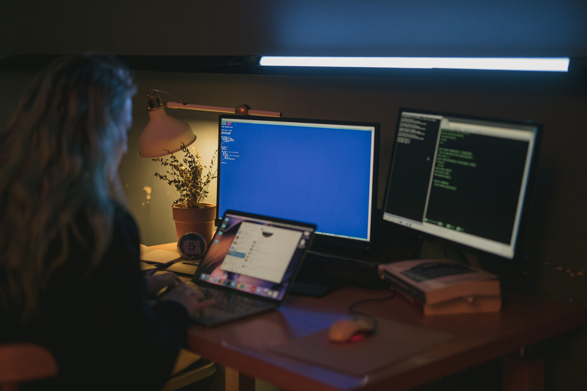

Navegando pelo Universo da Tecnologia: Novidades e Tendências
postado em 18 de outubro
A tecnologia da informação continua a remodelar o mundo em que vivemos. Desde inovações em hardware até avanços de software, a informática está moldando o futuro de quase todas as indústrias. Acompanhe conosco as últimas notícias, dicas de produtividade e as tendências que estão impulsionando a revolução digital.
Leia Mais